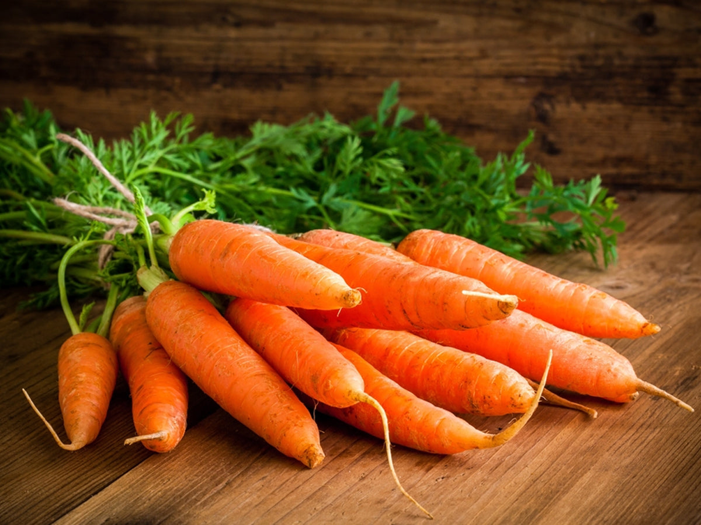
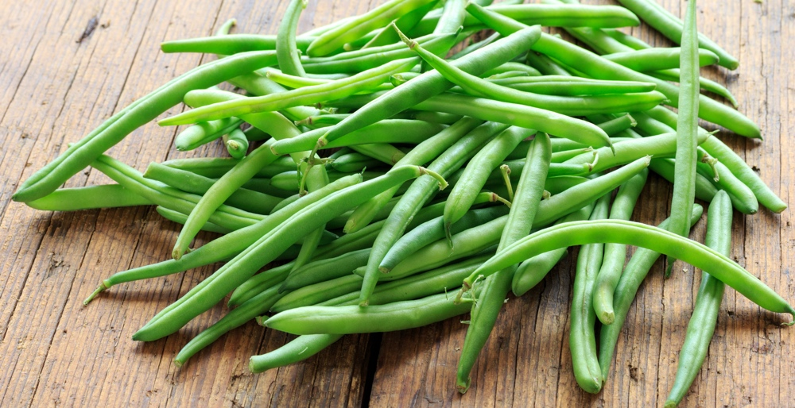
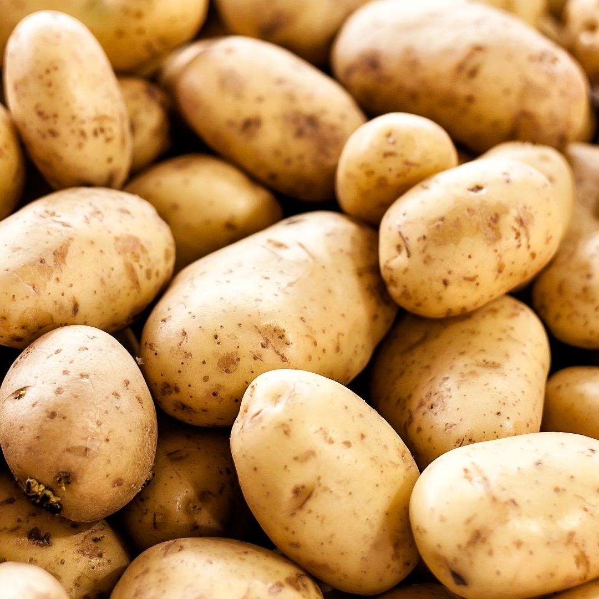
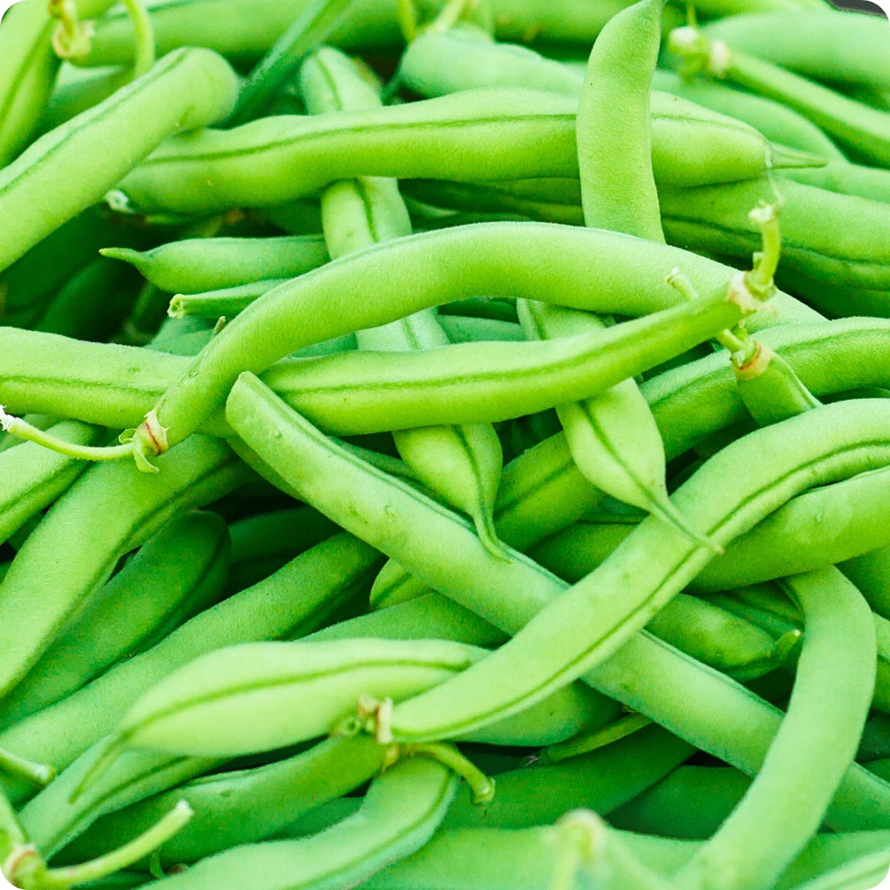
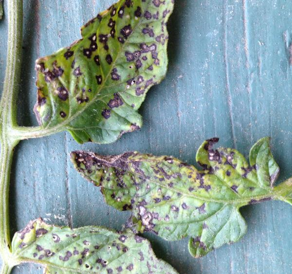

Farm fresh
ROOT VEGETABLES · UP COUNTRY
Fresh Carrots
Rs. 180 / kg↗ Nuwara Eliya grower
A simpler way for Sri Lankan farmers and buyers to meet. Discover fresh local produce, fair opportunities, and a community that grows together.



Explore what's growing and find the right produce for your needs.

Fresh todayNo produce found. Try a different search or category.
AgriConnect brings the agriculture community into one simple space — so good produce can find good people.
Get started ↗Browse local listings and find fresh produce from growers around the island.
↗Build direct connections between farmers, buyers, and agricultural partners.
↗Share opportunities, learn from the community, and grow your next season.
↗
HEALTHIER CROPS START WITH KNOWLEDGEGet closer to the knowledge that helps your farm thrive. AgriConnect's crop-care concept brings helpful guidance and AI-assisted disease insights into the same farming community.
Whether you grow it or buy it, there's a place for you on AgriConnect.